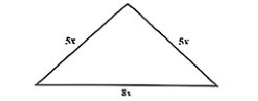

| বিষয় / শাখা | প্রশ্ন সংখ্যা | মূল আলোচিত বিষয়বস্তু |
|---|---|---|
| বাংলা ভাষা ও সাহিত্য | ২৫টি | তদ্ভব ও তৎসম শব্দে ণ-ত্ব বিধান, যতিচিহ্ন ও কোলনের নিয়ম, মূর্ধন্য ধ্বনি, কৃৎ ও তদ্ধিত প্রত্যয়, সমাস, এককথায় প্রকাশ ও জিজীবিষা |
| English Language & Literature | ২৫টি | Subjunctive mood, Inversion (Scarcely had), Causative verb (had + V1), Achilles heel, Conscientious spelling, Simile & Metaphor |
| গাণিতিক যুক্তি ও মানসিক দক্ষতা | ২০টি | বৃত্তাকার পথ ও পরিমিতি, সমদ্বিবাহু ত্রিভুজ ডায়াগ্রাম, স্থানাঙ্ক জ্যামিতি (ঢাল ও মধ্যবিন্দু), বৃত্তের সমীকরণ, অনুপাত ও নৌকা-স্রোত |
| সাধারণ জ্ঞান (বাংলাদেশ ও আন্তর্জাতিক) এবং আইসিটি | ৩০টি | তিন নেতার মাজার, ১৯৭১ এডওয়ার্ড কেনেডি উক্তি, পঞ্চদশ সংশোধনী, ICJ vs ICC, Graph Database, Zero-day vulnerability, DoS অ্যাটাক |
| সর্বমোট প্রামাণ্য প্রশ্ন | ১০০টি | ১০০% নির্ভুল ও প্রামাণ্য বিশদ ব্যাখ্যাকেন্দ্রিক সমাধান |
যে সকল শব্দ সংস্কৃত থেকে উদ্ভূত হয়েছে কিন্তু নিজেদের রূপ পরিবর্তন করেছে, সেগুলোকে তদ্ভব শব্দ বলা হয়। সংস্কৃত 'ভাণ্ডার' (মূর্ধন্য-ণ যুক্ত) থেকে বাংলায় 'ভান্ডার' (তদ্ভব) শব্দটি এসেছে। বাংলা বানানের আধুনিক নিয়ম অনুযায়ী তদ্ভব শব্দের বানানে মূর্ধন্য-ণ এর পরিবর্তে দন্ত্য-ন ব্যবহৃত হয়।
ঘণ্টা ও মিনিট বোঝাতে হাইফেন (-) ব্যবহার করে '৪-৩০' লেখা অপ্রচলিত ও অশুদ্ধ। প্রচলিত ও প্রমিত রীতি হলো কোলন (:) বা ডট (.) ব্যবহার করা, যেমন: ৪:৩০ বা ৪.৩০।
উচ্চারণ স্থান অনুযায়ী বাংলা বর্ণসমূহের বিভাজন:
• কণ্ঠ্য/জিহ্বামূলীয়: ক, খ, গ, ঘ, ঙ
• তালব্য: চ, ছ, জ, ঝ, ঞ, য, শ
• মূর্ধন্য/পশ্চাৎ দন্তমূলীয়: ট, ঠ, ড, ঢ, ণ, র, ড়, ঢ়, ষ
• দন্ত্য: ত, থ, দ, ধ, ন, ল, স
• ওষ্ঠ্য: প, ফ, ব, ভ, ম।
সুতরাং 'র' হলো মূর্ধন্য ধ্বনি (কম্পনজাত মূর্ধন্য ব্যঞ্জন)।
নাম শব্দ বা প্রাতিপদিকের সাথে যে প্রত্যয় যুক্ত হয়ে নতুন শব্দ গঠিত হয়, তাকে তদ্ধিত প্রত্যয় বলে। যেমন: হাত + ল = হাতল, ফুল + এল = ফুলেল, মুখ + র = মুখর।
অন্যদিকে, ধাতুর পরে যে প্রত্যয় যুক্ত হয় তাকে কৃৎ প্রত্যয় বলে। যেমন: লিখ্ + ইত = লিখিত (কৃৎ প্রত্যয়যোগে গঠিত শব্দ)।
'তেলাপোকা' শব্দটিতে 'এ' ধ্বনির উচ্চারণ বিবৃত (অ্যা-এর মতো), অর্থাৎ মুখগহ্বর বেশি উন্মুক্ত হয়ে উচ্চারিত হয়। অন্যদিকে 'দেহ', 'রেণু' এবং 'মেঘ' শব্দে 'এ'-এর উচ্চারণ সংবৃত বা স্বাভাবিক অবিকৃত থাকে।
'আবিল' শব্দের অর্থ কলুষিত, মলিন, পঙ্কিল, বা অস্বচ্ছ। এর বিপরীত শব্দ হলো 'অনাবিল' (নির্মল, স্বচ্ছ, পবিত্র)।
সারসংক্ষেপ বা সারাংশ রচনার প্রধান উদ্দেশ্য হলো একটি দীর্ঘ পাঠ্যের মূল বক্তব্য বা অন্তর্নিহিত বার্তা চিহ্নিত করে নিজের ভাষায় সংক্ষেপে তুলে ধরা। এর জন্য মূল কথা পুঙ্খানুপুঙ্খভাবে বুঝে নেওয়া সর্বাধিক গুরুত্বপূর্ণ। সারসংক্ষেপে কখনো নিজের ব্যক্তিগত অভিমত যুক্ত করা যাবে না।
বাক্যে ক্রিয়াপদের সাথে সরাসরি সম্পর্ক না রেখে যে পদ অন্য কোনো বিশেষ্য বা সর্বনাম পদের সাথে সম্বন্ধ বা মালিকানা নির্দেশ করে, তাকে সম্বন্ধ পদ/কারক বলে। 'তোমার ঘড়িটা সুন্দর' বাক্যে 'তোমার' (তুমি + র) শব্দটি ঘড়ির সাথে সম্বন্ধ নির্দেশ করছে (ষষ্ঠী বিভক্তি যুক্ত সম্বন্ধ কারক)।
'তোমার নাম বলো' বাক্যটি মূলত অনুজ্ঞাবাচক বা অনুরোধসূচক বাক্য, এটি কোনো প্রশ্নবোধক বাক্য নয়। তাই এর শেষে জিজ্ঞাসা চিহ্ন (?) না বসে দাঁড়ি (।) বসবে। সংশয় প্রকাশে বন্ধনীর মধ্যে '?' ব্যবহার ব্যাকরণসিদ্ধ।
'অভিনিবেশ' শব্দের অর্থ গভীর মনোযোগ, একাগ্রতা, মগ্নতা বা প্রণিধান। পক্ষান্তরে 'চেতন' শব্দের অর্থ সজাগ, সচেতন বা চৈতন্যময়, যা অভিনিবেশের সমার্থক নয়।
'ক্লীব' শব্দের অর্থ অক্ষম, পৌরুষহীন, দুর্বল বা নপুংসক। এর সঠিক বিপরীতার্থক শব্দ হলো 'সক্ষম' বা 'পৌরুষদীপ্ত'।
'অধুনা' একটি বিশেষণ পদ (বা কালবাচক বিশেষণ/ক্রিয়াবিশেষণ), যার অর্থ সাম্প্রতিক বা বর্তমানকালীন। অন্যদিকে 'অভ্যুত্থান' (বিশেষ্য), 'আকর' (বিশেষ্য, অর্থ খনি/উৎস), এবং 'আকাল' (বিশেষ্য, অর্থ দুর্ভিক্ষ)।
প্রদত্ত বিকল্পগুলোর মধ্যে 'শীর্ষ', 'সাক্ষর' (স্বাক্ষর = দস্তখত, সাক্ষর = অক্ষরজ্ঞানসম্পন্ন) এবং 'সত্তা' তিনটি বানানই শতভাগ শুদ্ধ। অন্য বিকল্পগুলোতে অশুদ্ধ বানান: সত্বর (সত্ত্বর নয়), চোষ্য (চোয্য নয়), উজ্জ্বল (উজ্জল নয়), বিচ্যুত (বিচ্যূত নয়), বাণী (বাণি নয়)।
শব্দ সংক্ষেপ করার জন্য সচরাচর ডট (.) বা ধাতুচিহ্ন/বিসর্গ/হাইফেন ব্যবহৃত হলেও 'কোলন' (:) কখনোই শব্দ সংক্ষেপের জন্য ব্যবহৃত হয় না। কোলন মূলত উদাহরণ বা ব্যাখ্যার পূর্বে ব্যবহৃত হয়।
বাংলায় মাসের ১ থেকে ৪ তারিখ পর্যন্ত হিন্দি নিয়মে গঠিত হয়: পহেলা (লা), দোসরা (রা), তেসরা (রা), চৌঠা (ঠা)। এরপর ৫ থেকে ১৮ তারিখ পর্যন্ত সাধারণ নিয়মে 'ই' এবং ১৯ থেকে ৩১ পর্যন্ত 'শে' যুক্ত হয়। 'তা' প্রত্যয়টি তারিখবাচক শব্দ তৈরিতে ব্যবহৃত হয় না।
বাংলা ভাষায় কিছু শব্দ উভয়লিঙ্গবাচক বা জাতিবাচক, যেগুলোর কোনো পৃথক পুরুষ বা নারীবাচক রূপ নেই। যেমন: মানুষ, সন্তান, শিশু, কবি, ডাক্তার ইত্যাদি। এছাড়া বিশেষণ পদের সাধারণত লিঙ্গভেদ হয় না (যেমন: ভালো ছেলে, ভালো মেয়ে)।
Circular শব্দের সর্বাধিক প্রমিত ও দাপ্তরিক পারিভাষিক শব্দ হলো 'পরিপত্র' (বা কোনো কোনো ক্ষেত্রে সাধারণ বিজ্ঞপ্তি)। প্রজ্ঞাপন = Proclamation/Gazette notification, প্রত্যয়ন = Attestation/Certification, বিজ্ঞপ্তি = Notice/Notification।
'Deprecate' অর্থ তীব্র নিন্দা করা, অসমর্থন বা ধিক্কার জানানো। সুতরাং 'His action was greatly deprecated'-এর সঠিক বঙ্গানুবাদ: 'তার কর্মকাণ্ড ব্যাপক নিন্দিত হয়েছিল'।
'ঐক্য' নিজেই একটি বিশেষ্য পদ (এক + য)। এর সাথে পুনরায় ভাববাচক 'তা' প্রত্যয় যোগ করে 'ঐক্যতা' গঠন করা ব্যাকরণগত বাহুল্যজনিত ভুল প্রয়োগ। শুদ্ধ রূপ হবে 'ঐক্য' বা 'একতা'।
'জনগণ' শব্দটি নিজেই সমষ্টিবাচক বহুবচন পদ। এর সাথে পুনরায় বহুবচন বিভক্তি 'এরা' যুক্ত করে 'জনগণেরা' লেখা দ্বৈত বহুবচনজনিত গুরুতর ভুল প্রয়োগ। শুদ্ধ রূপ হবে 'জনগণ'।
বাক্যে 'কর্মী' বিশেষ্য পদ এবং 'একদল' তার সংখ্যা/পরিমাপ নির্দেশ করে পুরো পদগুচ্ছটি একত্রে বিশেষ্যের ভূমিকা পালন করছে এবং বাক্যের কর্তা হিসেবে অবস্থান করছে। তাই এটি একটি 'বিশেষ্য বর্গ' (Noun Phrase)।
বিকল্পগুলোর বিশ্লেষণ:
• প্রত্যেক = প্রতি (উপসর্গ) + এক
• অত্যন্ত = অতি (উপসর্গ) + অন্ত
• পরিচয় = পরি (উপসর্গ) + চি + অ
• তালব্য = তালু + য (প্রত্যয় সাধিত শব্দ, কোনো উপসর্গ নেই)।
গুরুত্বপূর্ণ এককথায় প্রকাশ:
• বেঁচে থাকার ইচ্ছা = জিজীবিষা
• জানার ইচ্ছা = জিজ্ঞাসা
• জয় করার ইচ্ছা = জিগীষা
• হনন (হত্যা) করার ইচ্ছা = জিঘাংসা
• মুক্তি পাওয়ার ইচ্ছা = মুমুক্ষা
• লাভ করার ইচ্ছা = লিপ্সা।
বিভিন্ন জয়ন্তীর সময়কাল:
• ২৫ বছর পূর্তি = রজতজয়ন্তী (Silver Jubilee)
• ৫০ বছর পূর্তি = সুবর্ণজয়ন্তী (Golden Jubilee)
• ৬০ বছর পূর্তি = হীরকজয়ন্তী (Diamond Jubilee)
• ৭৫ বছর পূর্তি = প্লাটিনাম জয়ন্তী (Platinum Jubilee)
• ১০০ বছর পূর্তি = শতবর্ষ (Centenary)
• ১৫০ বছর পূর্তি = সার্ধশতবর্ষ।
'অর্থবছর' হলো কর্মধারয় সমাস। এর সঠিক ব্যাসবাক্য হলো 'অর্থ হিসাবে বছর' (মধ্যপদলোপী কর্মধারয় সমাস)।
The idiom 'to read between the lines' means to discover a meaning that is not openly stated, to look for hidden or implied meanings in a text or situation.
'Transience' means the state or fact of lasting only for a short time (ক্ষস্থায়িত্ব, অনিত্যতা). Its exact antonym is 'permanence' (স্থায়িত্ব, চিরন্তনতা). Instability and fluctuation are synonyms/related concepts, and deception means প্রতারণা.
In causative structure with 'have' in the active voice: Subject + have/had + person (agent) + base form of verb (V1). Therefore, 'The editor had the author revise the introduction for clarity' is correct.
An 'Achilles heel' is a weakness or vulnerable point in an otherwise strong situation or person (দুর্বল দিক বা ক্ষতিকর ত্রুটি). It originates from Greek mythology regarding the warrior Achilles.
The phrasal verb 'bring about' means to cause something to happen or cause significant changes (ঘটানো বা সৃষ্টি করা). 'Bring up' means to raise/mention, 'bring forward' means to suggest or advance an event.
'Incipient' means in an initial stage, beginning to develop or happen (প্রারম্ভিক, ক্রমবিকাশমান). Therefore, 'developing' is the most accurate synonym.
After mandative/subjunctive verbs of suggestion, demand or insistence (insist, demand, recommend, require, suggest) followed by a 'that-clause', the verb in the dependent clause must be in the subjunctive base form (V1), regardless of the subject. Hence, 'that the students be honest' is correct.
Negative adverbs like 'Scarcely', 'Hardly', 'No sooner' at the beginning of a sentence take subject-verb inversion with past perfect tense: Scarcely/Hardly + had + Subject + V3 + when/before + Past Indefinite. Hence, 'had' is correct.
Word forms:
• Verb: Create
• Noun: Creativity (or Creation / Creator)
• Adjective: Creative
• Adverb: Creatively.
The idiom 'to spill the beans' means to reveal secret or confidential information prematurely or maliciously (গোপন তথ্য ফাঁস করে দেওয়া).
Word forms:
• Adjective: Efficient
• Adverb: Efficiently
• Noun: Efficiency.
When two subjects are joined by 'Neither ... nor', 'Either ... or', or 'Not only ... but also', the verb agrees with the closer subject (the subject following 'nor'). Here, 'the manager' is singular, so the singular verb 'was' is required.
'Skilled at (or in)' is the appropriate preposition used to denote expertise or proficiency in doing something (কোনো কাজে দক্ষ). Thus, 'skilled at negotiating' is correct.
The verb 'consider' directly takes an object and an objective complement without 'as'. Furthermore, 'suitable' takes the preposition 'for'. Therefore, 'They considered him suitable for the job' is the grammatically correct sentence.
Rule: 'The number of + plural noun' always takes a singular verb, whereas 'A number of + plural noun' takes a plural verb. In addition, 'in recent years' signals present perfect tense. Therefore, 'has increased' is the correct choice.
When two nouns are connected by 'as well as', 'with', 'together with', or 'along with', the verb agrees with the first subject. Here, the first subject is 'The players' (plural), so the plural verb 'were' is correct.
The phrase 'be supposed to' means expected to do something. Because the second clause ('the storm delayed them') is in the past tense, the past form 'were supposed' is required.
The adjective/participle 'accused' is followed by the preposition 'of' (accused of something/doing something). Therefore, 'She was accused of stealing' is the correct sentence.
The correct spelling is 'Conscientious' (C-O-N-S-C-I-E-N-T-I-O-U-S), which means wishing to do one's work or duty thoroughly and diligently (কর্তব্যপরায়ণ, বিবেকবান).
'Admire' takes the preposition 'for' (admired for something). With correlative 'both ... and', the preposition can precede: 'admired for both his eloquence and clarity'.
In present perfect continuous tense, 'since' is used before a specific point of time (Point of time, e.g. since last June, since morning), while 'for' is used before a period of time (Period of time, e.g. for two hours, for five days).
The structure with 'so' modifying an adjective before a singular countable noun is: so + adjective + a/an + noun + that clause. Therefore, 'so complex a task that ...' is grammatically correct. Alternatively, 'such a complex task that' could be used.
When a subject is followed by 'along with', the verb agrees with the primary subject. Here, 'Each member' is singular and grammatically distributive, which strictly requires a singular verb: 'is'.
A 'Simile' is a figure of speech that directly compares two different things using connective words such as 'like' or 'as' (e.g., 'as brave as a lion', 'love is like a red rose'). In contrast, a 'Metaphor' is an implicit comparison without using 'like' or 'as'.
When two past events are linked by 'before', the earlier action takes the Past Perfect tense (had + V3) and the later action takes Simple Past ('could stop'). Since the letter receives the action, passive voice is required: 'had been posted'.
সমাধান:
• নীতার অবস্থান শুরু থেকে = ৫ম।
• নীতা মিতার চেয়ে ১৫ স্থান এগিয়ে, সুতরাং মিতার অবস্থান শুরু থেকে = \(5 + 15 = 20\)তম।
• মিতা শেষ থেকে = ১৩তম।
• মোট শিক্ষার্থী সংখ্যা \(= (\text{শুরু থেকে অবস্থান}) + (\text{শেষ থেকে অবস্থান}) - 1 = 20 + 13 - 1 = 32\) জন।
সমাধান:
• বাগানের ব্যাস \(= 20\text{ m}\) হলে ব্যাসার্ধ \(r = 10\text{ m}\)।
• পথসহ বাগানের ব্যাসার্ধ \(R = 10 + 1 = 11\text{ m}\)।
• পথের ক্ষেত্রফল \(= \pi R^2 - \pi r^2 = \pi (11^2 - 10^2) = \pi (121 - 100) = 21\pi\text{ m}^2\)।
সমাধান:
• বর্গক্ষেত্রের পরিসীমা \(= 4a = 32 \implies a = 8\text{ m}\)।
• বর্গক্ষেত্রের ক্ষেত্রফল \(= a^2 = 8^2 = 64\text{ m}^2\)।
• আয়তক্ষেত্রের ক্ষেত্রফল \(= \text{দৈর্ঘ্য} \times \text{প্রস্থ} = 64\)।
• দেওয়া আছে দৈর্ঘ্য \(= 4\text{ m}\) (বা প্রস্থ ও দৈর্ঘ্যের সম্পর্কানুযায়ী), \(\text{প্রস্থ} = \frac{64}{4} = 16\text{ m}\)।
সমাধান:
লগের সংজ্ঞা অনুযায়ী, \(\log_x \frac{1}{216} = -3 \implies x^{-3} = \frac{1}{216}\)
\(\implies \frac{1}{x^3} = \frac{1}{6^3} \implies x^3 = 6^3 \implies x = 6\)।
সমাধান:
দেওয়া আছে: \(\frac{45}{100}(A - B) = \frac{3}{10}(A + B)\)
\(\implies \frac{9}{20}(A - B) = \frac{6}{20}(A + B)\)
\(\implies 9(A - B) = 6(A + B) \implies 3(A - B) = 2(A + B)\)
\(\implies 3A - 3B = 2A + 2B \implies A = 5B \implies B = \frac{1}{5}A\)।
\(A\)-এর শতকরা হিসেবে \(B = \frac{B}{A} \times 100\% = \frac{1}{5} \times 100\% = 20\%\)।
সমাধান:
যে কোনো অনুভূমিক সরলরেখার (horizontal line) সমীকরণ হলো \(y = c\) (ধ্রুবক)। যেহেতু রেখাটি \((3, 2)\) বিন্দুগামী, তাই এর \(y\)-স্থানাঙ্ক সর্বদা 2 হবে। অতএব নির্ণেয় সমীকরণ: \(y = 2\)। (উল্লম্ব রেখা হলে হতো \(x = 3\))।
সমাধান:
ছেদক আকারের সরলরেখার সমীকরণ: \(\frac{x}{a} + \frac{y}{b} = 1\)।
এখানে \(a = 2\) এবং \(b = -1\)।
\(\implies \frac{x}{2} + \frac{y}{-1} = 1 \implies \frac{x}{2} - y = 1 \implies x - 2y = 2\)।
সমাধান:
\((h, k)\) কেন্দ্র এবং \(r\) ব্যাসার্ধবিশিষ্ট বৃত্তের প্রমাণ সমীকরণ: \((x - h)^2 + (y - k)^2 = r^2\)।
এখানে কেন্দ্র \((h, k) = (3, -5)\) এবং ব্যাসার্ধ \(r = 6\)।
অতএব, সমীকরণ: \((x - 3)^2 + (y - (-5))^2 = 6^2 \implies (x - 3)^2 + (y + 5)^2 = 36\)।
সমাধান:
বর্গক্ষেত্রের বাহু \(x\%\) বৃদ্ধি পেলে ক্ষেত্রফল বৃদ্ধির সূত্র: \(2x + \frac{x^2}{100}\)।
এখানে \(x = 10\)।
বৃদ্ধি \(= 2(10) + \frac{10^2}{100} = 20 + 1 = 21\%\)।
সমাধান:
ধরি, বালিকার সংখ্যা \(= 100x\), তাহলে বালকের সংখ্যা \(= 135x\)।
মোট শিক্ষার্থী \(= 100x + 135x = 235x = 94 \implies x = \frac{94}{235} = 0.4\)।
• বালিকার সংখ্যা \(= 100 \times 0.4 = 40\) জন।
• বালকের সংখ্যা \(= 135 \times 0.4 = 54\) জন।
নতুন ৬ জন বালক ভর্তি হলে বালকের সংখ্যা \(= 54 + 6 = 60\) জন।
অতএব, বালক ও বালিকার নতুন অনুপাত \(= 60 : 40 = 3 : 2\)।
সমাধান:
\(2 - 3x > 1 \implies -3x > 1 - 2 \implies -3x > -1\)
উভয়পক্ষকে \(-3\) দ্বারা ভাগ করলে অসমতার চিহ্ন উল্টে যাবে:
\(\implies x < \frac{-1}{-3} \implies x < \frac{1}{3}\)।
সমাধান:
ধরি, স্রোতের বেগ \(= y\text{ km/h}\) এবং স্থির পানিতে নৌকার বেগ \(x = 12\text{ km/h}\)।
• অনুকূলে বেগ \(= 12 + y\)
• প্রতিকূলে বেগ \(= 12 - y\)
প্রতিকূলে সময় অনুকূলের ৩ গুণ লাগায়:
\(12 + y = 3(12 - y) \implies 12 + y = 36 - 3y \implies 4y = 24 \implies y = 6\text{ km/h}\)।

সমাধান:
প্রদত্ত ডায়াগ্রামে ত্রিভুজটি একটি সমদ্বিবাহু ত্রিভুজ, যার সমান সমান বাহুদ্বয় \(a = 5x\) এবং ভূমি \(b = 8x\)।
ভূমি \(8x\)-এর মধ্যবিন্দুতে শীর্ষ থেকে লম্ব টানলে ভূমির অর্ধেক \(= \frac{8x}{2} = 4x\)।
পিথাগোরাসের উপপাদ্য অনুসারে লম্ব উচ্চতা \(h = \sqrt{(5x)^2 - (4x)^2} = \sqrt{25x^2 - 16x^2} = \sqrt{9x^2} = 3x\)।
অতএব, ত্রিভুজটির ক্ষেত্রফল \(= \frac{1}{2} \times \text{ভূমি} \times \text{উচ্চতা} = \frac{1}{2} \times 8x \times 3x = 12x^2\)।
সমাধান:
ভগ্নাংশ আকারের ফাংশন \(f(x) = \frac{1}{x+3}\) বাস্তব সংজ্ঞায়িত হবে যদি এবং কেবল যদি হর শূন্য না হয়।
অর্থাৎ, \(x + 3 \neq 0 \implies x \neq -3\)।
সুতরাং ফাংশনটির ডোমেন হলো \(-3\) ব্যতীত সকল বাস্তব সংখ্যা, যাকে সেট আকারে লেখা হয় \(\mathbb{R} - \{-3\}\) বা \(x \in \mathbb{R}, x \neq -3\)।
সমাধান:
প্রদত্ত সরণ সমীকরণ: \(S = 10t - t^2\)।
\(t = 2\text{ s}\) বসিয়ে পাই:
\(S(2) = 10(2) - (2)^2 = 20 - 4 = 16\text{ m}\)।
সমাধান:
দুটি বিন্দু \((x_1, y_1)\) ও \((x_2, y_2)\)-এর মধ্যবিন্দুর স্থানাঙ্ক: \(\left(\frac{x_1 + x_2}{2}, \frac{y_1 + y_2}{2}\right)\)।
এখানে \(P_1 = (4, -3)\) এবং \(P_2 = (6, 1)\)।
\(\text{মধ্যবিন্দু} = \left(\frac{4 + 6}{2}, \frac{-3 + 1}{2}\right) = \left(\frac{10}{2}, \frac{-2}{2}\right) = (5, -1)\)।
সমাধান:
ত্রিকোণমিতিক অভেদ: \(\sec^2 A = 1 + \tan^2 A\)।
\(\sec^2 A = 1 + \left(\frac{3}{4}\right)^2 = 1 + \frac{9}{16} = \frac{25}{16}\)
\(\implies \sec A = \sqrt{\frac{25}{16}} = \frac{5}{4}\)।
যে সংখ্যাকে দুইটি পূর্ণসংখ্যার অনুপাত বা ভগ্নাংশ \(\frac{p}{q}\) আকারে প্রকাশ করা যায় না, তাকে অমূলদ সংখ্যা (Irrational number) বলে। \(\sqrt{2} \approx 1.4142135...\) একটি অসীম অনাবৃত দশমিক সংখ্যা, তাই এটি অমূলদ। পক্ষান্তরে \(\frac{3}{5}\), \(0.75 = \frac{3}{4}\), এবং \(1.2 = \frac{6}{5}\) মূলদ সংখ্যা।
সমাধান:
সংযোগ সেট (Union of sets) \(A \cup B\) হলো \(A\) ও \(B\) সেটের সকল উপাদান নিয়ে গঠিত সেট।
\(A \cup B = \{1, 2, 3\} \cup \{2, 3, 4\} = \{1, 2, 3, 4\}\)। (ছেদ সেট \(A \cap B = \{2, 3\}\))।
সমাধান:
পরস্পর লম্ব দুটি সরলরেখার ঢাল \(m_1\) ও \(m_2\) হলে তাদের গুণফল \(m_1 \times m_2 = -1\)।
এখানে \(m_1 = 2\)।
\(\implies 2 \times m_2 = -1 \implies m_2 = -\frac{1}{2}\)।
ফ্যাসিবাদী ও কর্তৃত্ববাদী শাসনব্যবস্থাগুলো জনমত নিয়ন্ত্রণ, বিরোধী কণ্ঠ দমন এবং ক্ষমতা টিকিয়ে রাখার জন্য রাষ্ট্রীয় প্রচারণা (Propaganda) এবং গণমাধ্যমের উপর কঠোর সেন্সরশিপ (Censorship) ও গোয়েন্দা নজরদারি প্রধান অস্ত্র হিসেবে ব্যবহার করে থাকে।
২০২৫ সালের ১৭ সেপ্টেম্বর রিয়াদে সৌদি আরব ও পাকিস্তানের মধ্যে 'Strategic Mutual Defense Agreement' (SMDA) স্বাক্ষরিত হয়। এই চুক্তির অন্যতম মূল ধারা হলো—উভয় দেশের কোনো একটির ওপর বহিরাগত আক্রমণকে উভয়ের বিরুদ্ধে আক্রমণ হিসেবে বিবেচনা করা হবে।
ঢাকার সোহরাওয়ার্দী উদ্যানের দক্ষিণ প্রান্তে অবস্থিত ঐতিহাসিক 'তিন নেতার মাজার'-এ অবিভক্ত বাংলা ও পূর্ব পাকিস্তানের তিন জন প্রথিতযশা জাতীয় নেতা সমাহিত আছেন: ১. শেরে বাংলা এ. কে. ফজলুল হক, ২. হোসেন শহীদ সোহরাওয়ার্দী, এবং ৩. খাজা নাজিমুদ্দিন। মওলানা আব্দুল হামিদ খান ভাসানীর মাজার টাঙ্গাইলের সন্তোষে অবস্থিত।
১৯৭১ সালের মুক্তিযুদ্ধ চলাকালে মার্কিন সিনেটর এডওয়ার্ড কেনেডি (Edward Kennedy) ভারতে আশ্রয় নেওয়া বাঙালি শরণার্থী শিবিরগুলো পরিদর্শন করে পাকিস্তানি বাহিনীর বর্বরতাকে 'the greatest human disaster in modern times' হিসেবে অভিহিত করেন এবং মার্কিন কংগ্রেসে পাকিস্তানকে সামরিক সহায়তা বন্ধের জোরালো দাবি জানান।
বাংলাদেশের পাবলিক এক্সপেন্ডিচার ফ্রেমওয়ার্ক (PEF) এবং বার্ষিক উন্নয়ন কর্মসূচির (ADP) সিংহভাগ ব্যয় মানবসম্পদ উন্নয়ন ও অর্থনৈতিক প্রবৃদ্ধির মূল ভিত্তি হিসেবে অবকাঠামো (Infrastructure - পরিবহন ও বিদ্যুৎ), শিক্ষা এবং স্বাস্থ্য খাতে বরাদ্দ থাকে।
যেকোনো উন্নয়নশীল দেশের অর্থনৈতিক পুনরুদ্ধারের প্রধান অন্তরায় হলো দুর্বল সুশাসন ও দুর্নীতি (weak governance), উচ্চ মূল্যস্ফীতি (inflation) এবং বৈশ্বিক সরবরাহ বিঘ্ন ও ভূ-রাজনৈতিক সংঘাত (global shocks)।
২০১০ সালে মেক্সিকোর কানকুন জলবায়ু সম্মেলনে (COP16) গঠিত জাতিসংঘ ফ্রেমওয়ার্ক কনভেনশনের অধীনস্থ গ্রিন ক্লাইমেট ফান্ডের (GCF) মূল উদ্দেশ্য হলো জলবায়ু পরিবর্তনের ক্ষতিকর প্রভাব মোকাবিলায় উন্নয়নশীল দেশগুলোকে অভিযোজন (adaptation) ও প্রশমন (mitigation) প্রকল্পে আর্থিক অনুদান ও সহজ শর্তে ঋণ প্রদান করা।
২০২৫ সালের সেপ্টেম্বর মাসে নেপাল সরকার নতুন নিবন্ধন বিধিমালার অজুহাতে টিকটক ও অন্যান্য জনপ্রিয় সোশ্যাল মিডিয়া প্ল্যাটফর্মের ওপর নিষেধাজ্ঞা আরোপ করলে দেশটির তরুণ প্রজন্ম (Gen Z) বাক্স্বাধীনতা ও দুর্নীতির বিরুদ্ধে রাজপথে নেমে তীব্র গণবিক্ষোভ গড়ে তোলে।
২০১১ সালের ৩০ জুন পাস হওয়া সংবিধানের পঞ্চদশ সংশোধনীর মাধ্যমে ১৯৭২ সালের মূল সংবিধানের অন্যতম চার মূলনীতির একটি—'ধর্মনিরপেক্ষতা' (Secularism) পুনঃস্থাপন করা হয় এবং একই সাথে নির্দলীয় তত্ত্বাবধায়ক সরকার ব্যবস্থা বাতিল করা হয়।
ICJ ও ICC-এর মৌলিক পার্থক্য:
• ICJ (নেদারল্যান্ডসের হেগ-এ অবস্থিত জাতিসংঘের প্রধান বিচারিক অঙ্গ) কেবল রাষ্ট্র বনাম রাষ্ট্রের মধ্যকার আন্তর্জাতিক আইনি বিরোধ নিষ্পত্তি করে।
• ICC (রোম সংবিধির অধীনে স্বাধীন স্থায়ী আদালত) যুদ্ধাপরাধ, গণহত্যা ও মানবতাবিরোধী অপরাধের জন্য ব্যক্তিপর্যায়ের দায়ীদের বিচার করে।
সংযুক্ত আরব আমিরাত (বিশেষ করে দুবাই আন্তর্জাতিক বিমানবন্দর) বিশ্বে প্রথম পাসপোর্ট বা কোনো ধরনের কাগজের নথিপত্র ছাড়াই সম্পূর্ণ ফেসিয়াল রিকগনিশন ও এআই-চালিত স্মার্ট করিডোর চালু করেছে।
বায়ুমণ্ডলের সর্বনিম্ন স্তর 'ট্রপোস্ফিয়ার' (Troposphere)-এ পৃথিবীর মোট বায়ুমণ্ডলের ভরের প্রায় ৭৫-৮০% এবং জলীয় বাষ্প ও কার্বন ডাই-অক্সাইডসহ অধিকাংশ গ্রিনহাউস গ্যাস পুঞ্জীভূত থাকে।
জলবায়ু বিজ্ঞানীদের মতে, 'Arctic Amplification' প্রক্রিয়ার কারণে সুমেরু অঞ্চল বা আর্কটিক (The Arctic) এবং মহাদেশ হিসেবে ইউরোপ বৈশ্বিক গড় উষ্ণায়নের চেয়ে দ্বিগুণ দ্রুত হারে উষ্ণ হচ্ছে।
বাংলাদেশের সমতল অঞ্চলের প্রধান আদিবাসী নৃগোষ্ঠী হলো সাঁওতাল (Santal), ওঁরাও, গারো, রাজবংশী, হাজং ইত্যাদি (রাজশাহী, নওগাঁ, দিনাজপুর, রংপুর অঞ্চলে বসবাস)। চাকমা, ত্রিপুরা ও ম্রো পার্বত্য চট্টগ্রামের পাহাড়ি নৃগোষ্ঠী।
তিস্তা নদী নিয়ে বাংলাদেশ-ভারতের বিরোধের মূল কারণ হলো শুষ্ক মৌসুমে (অক্টোবর থেকে এপ্রিল) পানি বণ্টন। ভারতের গজলডোবা ব্যারাজের মাধ্যমে পানি প্রত্যাহারের ফলে শুষ্ক মৌসুমে তিস্তা ব্যারাজ এলাকায় সেচ সংকট দেখা দেয়।
মার্কিন ডলারের আধিপত্য কমানোর ডি-ডলারাইজেশন প্রক্রিয়ায় চীন ও ব্রিকস দেশগুলোর আন্তর্জাতিক বাণিজ্য নিষ্পত্তিতে চীনা মুদ্রা ইউয়ান বা রেনমিনবি (Chinese Yuan / Renminbi) সর্বাধিক গ্রহণযোগ্যতা পাচ্ছে।
মিথেন বায়ুমণ্ডলে তাপ আটকে রাখতে বেশি কার্যকর হলেও কার্বন ডাই-অক্সাইড (CO2) শত শত বছর বায়ুমণ্ডলে অবস্থান করে দীর্ঘমেয়াদি বৈশ্বিক উষ্ণায়নের প্রধান নিয়ামক হিসেবে কাজ করে।
জাতিসংঘের জলবায়ু পরিবর্তন বিষয়ক বৈশ্বিক সম্মেলন COP30 (Conference of the Parties) ২০২৫ সালের ১০–২১ নভেম্বর ব্রাজিলের বেলেমে (Belém, Brazil) অনুষ্ঠিত হতে নির্ধারিত।
২০১২ সালে মার্কিন রাজনৈতিক কর্মী চার্লি কির্ক (Charlie Kirk) তরুণদের মাঝে রক্ষণশীল রাজনৈতিক আদর্শ প্রসারের লক্ষ্যে 'Turning Point USA' (TPUSA) প্রতিষ্ঠা করেন।
বিশ্বব্যাংকের 'গ্লোবাল ইকোনমিক প্রসপেক্টস' প্রতিবেদন অনুসারে ২০২৫ সালে বৈশ্বিক অর্থনৈতিক প্রবৃদ্ধির হার ২.৩% থেকে ২.৭%-এর ঘরে প্রাক্কলন করা হয়েছে।
পারস্পরিক নিবিড় সংযোগ ও জটিল সম্পর্কযুক্ত ডেটা (যেমন: সোশ্যাল মিডিয়া নেটওয়ার্ক, ফ্রড ডিটেকশন, নলেজ গ্রাফ) সংরক্ষণে 'Graph Database' (যেমন: Neo4j) সর্বাধিক উপযোগী, কারণ এটি নোড (Node) ও এজ (Edge) আকারে ডেটা সংরক্ষণ করে।
DNS (Domain Name System)-এর প্রধান কাজ হলো মানুষের পাঠযোগ্য ডোমেন নামকে (যেমন: www.google.com) কম্পিউটারের শনাক্তযোগ্য সাংখ্যিক আইপি অ্যাড্রেসে (IP Address, যেমন: 142.250.190.46) রূপান্তর বা ট্রান্সলেট করা।
অ্যানালগ সংকেতকে ডিজিটাল সংকেতে রূপান্তরের (ADC) প্রাথমিক ও প্রধান পর্যায় হলো স্যাম্পলিং (Sampling - নির্দিষ্ট সময় অন্তর সিগন্যালের মান সংগ্রহ করা) ও কোয়ান্টাইজেশন। মডেমের ক্ষেত্রে ডিমডুলেশন হলো ক্যারিয়ার তরঙ্গ থেকে ডিজিটাল সিগন্যাল পুনরুদ্ধার।
Gemini হলো গুগলের সর্বাধুনিক জেনারেটিভ এআই মডেল ও অ্যাসিস্ট্যান্ট, যা গুগল ক্রোম ব্রাউজারের সাইড প্যানেলে ব্রাউজিং অভিজ্ঞতা সহজ ও তথ্যবহুল করার জন্য সরাসরি সংযুক্ত করা হয়েছে।
QR কোড-এ 'QR' এর পূর্ণরূপ হলো 'Quick Response'। ১৯৯৪ সালে জাপানি কোম্পানি ডেনসো ওয়েভ (Denso Wave) দ্রুত ডেটা রিড ও ডিকোড করার উদ্দেশ্যে এটি উদ্ভাবন করে।
Rootkit হলো একটি অত্যন্ত ক্ষতিকর গোপন ম্যালওয়্যার যা অপারেটিং সিস্টেমের কার্নেল বা গভীর স্তরে অননুমোদিত অ্যাক্সেস বা ব্যাকডোর তৈরি করে এবং অ্যান্টিভাইরাস ও ব্যবহারকারীর চোখ ফাঁকি দিয়ে সম্পূর্ণ অদৃশ্য থাকে।
কম্পিউটার নেটওয়ার্কে প্রতিটি ডিভাইসকে অনন্যভাবে শনাক্ত করার জন্য আইপি অ্যাড্রেস (IP Address - Internet Protocol Address) এবং হার্ডওয়্যার স্তরে ম্যাক অ্যাড্রেস (MAC Address) ব্যবহৃত হয়।
Zero-day vulnerability হলো সফটওয়্যারের এমন একটি নিরাপত্তা ত্রুটি যা নির্মাতা বা ভেন্ডর জানার আগেই হ্যাকারদের দ্বারা আবিষ্কৃত হয়। ফলে ভেন্ডরের কাছে ত্রুটিটি সমাধান বা সিকিউরিটি প্যাচ প্রকাশের জন্য 'শূন্য দিন' (zero days) সময় থাকে।
SSH (Secure Shell) প্রোটোকল রিমোট সার্ভারে নিরাপদ লগইন এবং কমান্ড লাইন ইন্টারফেসে এনক্রিপ্টেড যোগাযোগের জন্য ব্যবহৃত হয় (পোর্ট ২২)। টেলনেট (Telnet) প্লেইন টেক্সটে ডেটা পাঠায় বিধায় তা অনিরাপদ।
Denial-of-Service (DoS) বা Distributed Denial-of-Service (DDoS) এমন একটি সাইবার হামলা যেখানে কোনো সার্ভার বা নেটওয়ার্কে বিপুল পরিমাণ ভুয়া ট্রাফিকের বন্যা সৃষ্টি করে সাধারণ ব্যবহারকারীদের জন্য সেবাটি অচল ও অনুপলব্ধ করে দেওয়া হয়।